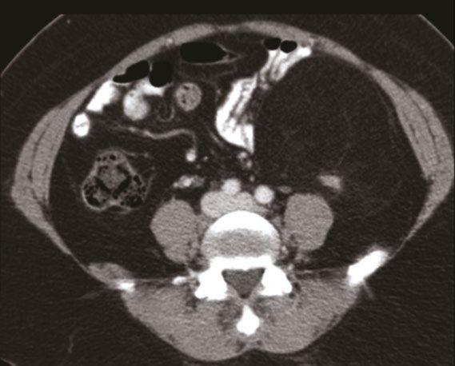
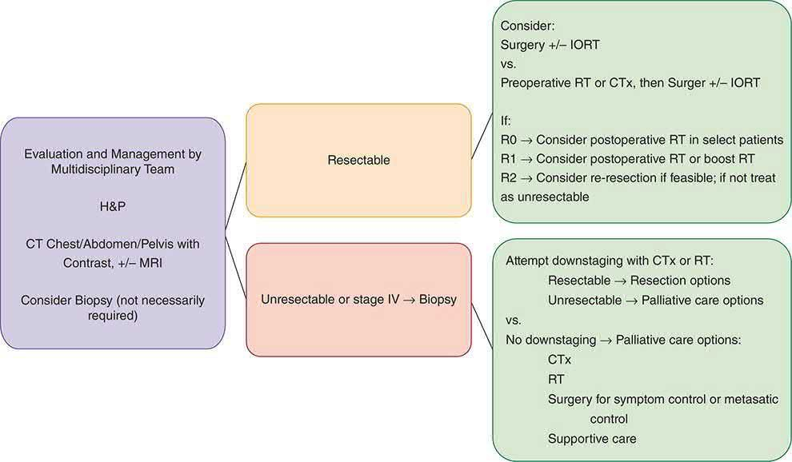
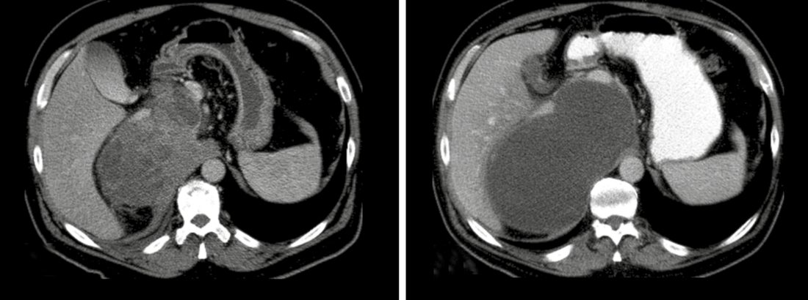
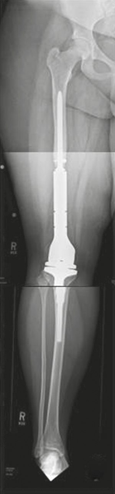

Sarcoma
Summary
- Sarcomas are a diverse group of roughly 70 distinct malignant neoplasms of mesenchymal origin that can arise in soft tissue or bone, most commonly presenting as a painless mass [1][2].
- Soft tissue sarcomas (STS) are relatively rare, accounting for about 1% of cancer incidence and 2% of cancer deaths in the United States, with the extremities (especially the thigh) more commonly affected than the retroperitoneum [1].
- Diagnosis relies on core-needle biopsy planned along the line of eventual definitive resection, and treatment is built around wide surgical excision, often combined with radiotherapy and, in selected settings, chemotherapy, delivered by a specialist multidisciplinary sarcoma team [1][3].
- NICE has no clinical guideline on sarcoma (only a service guideline and a quality standard) so UK clinical practice runs on the British Sarcoma Group guidelines instead.
- NICE's contribution is CSG9, Improving outcomes for people with sarcoma, a cancer service guideline published in 2006 and last reviewed in October 2014, which covers how services should be organised rather than how patients should be treated.
- Its five recommendations are that prompt referral for expert diagnosis is crucial; that people should receive treatment from a specialist multidisciplinary team; that treatment should be carried out by specialists; that appropriate support and rehabilitation services should be available; and that all sarcoma teams should collect data on treatment and care and take part in training programmes and audits [4].
- NICE identified no major studies likely to change those recommendations in the next 3 to 5 years [4].
- The clinical content comes instead from the British Sarcoma Group UK guidelines for the management of soft tissue sarcomas, whose 2025 edition updates the 2010 and 2016 versions and, for the first time, adds sections on sarcomas at defined anatomical sites, gynaecological, retroperitoneal, breast and skin [5].
- The BSG panel explicitly reviewed the NICE, ESMO and NCCN documents and tailored the recommendations for UK practice, providing levels of evidence and grades of recommendation for the key recommendations [5].
- Its framing statement is that any patient in the UK with a suspected soft tissue sarcoma should be referred to a specialist regional soft tissue sarcoma service, to be managed by a specialist sarcoma multidisciplinary team [5].
QS78 turns the service guideline into six measurable statements, four of which bear directly on surgical practice: sarcoma advisory groups and MDTs must have referral and diagnosis pathways in place for people with suspected sarcoma; adults, children and young people with bone sarcoma and adults with soft tissue sarcoma must have their care plan confirmed by a sarcoma MDT and treatment delivered by services designated by the sarcoma advisory group; people with a retroperitoneal sarcoma must be referred, before having any treatment, to a sarcoma treatment centre with special expertise in managing that type of tumour; and surgeons performing planned resections of sarcomas must be core or extended members of a sarcoma MDT [6].
Definition
- Soft tissue sarcomas are malignant tumours originating from mesenchymal tissue, including skeletal muscle, adipose tissue, blood and lymphatic vessels, and other connective tissue of common mesodermal origin, as well as peripheral nerve tumours derived from neuroectoderm [1].
- Bone sarcomas (osteosarcoma, Ewing sarcoma, chondrosarcoma) are malignant primary tumours of bone that are rare but occur notably in children and young adults [3].
- Musculoskeletal tumours encompass both primary and secondary (metastatic) benign and malignant tumours of bone and soft tissue; metastatic carcinoma is the most common malignant tumour found in bone overall [3].
Pathophysiology
- Sarcomas resulting from identifiable molecular events (point mutations, translocations causing autocrine growth factor overexpression, or oncogenic fusion transcription factors) tend to occur in younger patients with histology suggesting a clear line of differentiation, whereas sarcomas without identifiable genetic changes tend to occur in older patients and show pleomorphic cytology with p53 dysfunction [7].
- Well-differentiated and dedifferentiated liposarcomas are driven by amplification of chromosome 12q13-15, upregulating MDM2 and CDK4, while myxoid/round-cell liposarcomas are characterised by the FUS-DDIT3 translocation t(12;16) [1].
- Ewing sarcoma cells characteristically carry a t(11;22) translocation [3].
- STS spreads primarily haematogenously (to lungs, liver, bone) rather than to lymphatics, so regional lymph node metastasis is uncommon overall (2–10%), although angiosarcoma, rhabdomyosarcoma, undifferentiated pleomorphic sarcoma, epithelioid sarcoma and clear cell sarcoma carry a higher risk of nodal spread [1][2].
- Carcinomas metastasise to bone haematogenously, and the spine is the third most common site of metastasis after lung and liver, reached in part via the valveless Batson venous plexus permitting retrograde embolic spread; bone metastases may be lytic, sclerotic, or mixed [3].
Clinical features
- Most sarcomas present as a large, rapidly growing, painless mass; other presentations include gastrointestinal bleeding, bowel obstruction, or neurologic deficit depending on location [2].
- Warning signs for a soft-tissue tumour needing specialist referral are size greater than 5 cm, increasing size, pain, a location deep to the fascia, and recurrence after previous excision [3].
- Non-mechanical or night bone pain, particularly around the knee in a young adolescent, is a concerning symptom for a primary bone tumour [3].
- Retroperitoneal sarcomas typically present in the sixth to seventh decade with vague symptoms such as abdominal fullness or distension; acute pain or obstruction is rare, and up to 50% of retroperitoneal sarcomas measure over 20 cm at diagnosis, with a palpable mass often present on examination [8].
- Retroperitoneal sarcoma presentation may also include abdominal pain, weight loss, early satiety, nausea, emesis, back or flank pain, paraesthesias and weakness, or the mass may be asymptomatic and incidentally discovered [1].
- Ewing sarcoma typically presents with a painful mass and may show systemic symptoms including fever, anaemia and raised ESR [3].
- Bone metastases are most commonly from breast, lung, thyroid, prostate, renal or colon carcinoma (93% of cases), with the spine, proximal femur/pelvis and proximal humerus being the most common sites [3].
Presenting features of a bone tumour
- Oxford frames bone tumour assessment around a checklist, with the warning that the key to successful management is early detection, and always having a clinical suspicion is essential [9].
- The features to elicit are pain, persistent, at night, and its response to analgesics; a mass or swelling and its rate of progression; whether a fracture has a history of trauma; neurological symptoms; systemic symptoms; previous tumours, radiotherapy or chemotherapy; and any family history.
- Oxford's specific caution is to watch for the "red herring history" of trivial injury [9].
- On examination, the features of the mass are extracted, lymphadenopathy palpated, and three questions asked: is it around a joint, is it deep to the fascia, and what is its size and relationship to surrounding structures [9].
- Browse's makes the same point about attributed trauma from the patient's side: patients often relate the onset of their symptoms to an injury, but there is no evidence that trauma causes sarcoma, the injury simply focuses their attention on symptoms they had previously dismissed as trivial and insignificant [10].
- Browse's describes osteosarcoma as occurring in two groups of patients, the young and elderly patients with Paget's disease, and as a highly malignant spindle-cell tumour that spreads locally into the surrounding soft tissues and early and rapidly by the bloodstream [10].
- Pain is the predominant symptom, usually beginning before the patient notices a lump, and is a persistent ache or throb.
- General malaise, cachexia and weight loss may precede or coincide with local symptoms, while pulmonary metastases may cause cough and haemoptysis, and abdominal discomfort with jaundice may follow enlargement and destruction of the liver by metastases [10].
- The most common sites are the lower end of the femur, the upper end of the tibia and the upper end of the humerus, with the overlying skin sometimes reddened and the subcutaneous veins visibly distended [10].
- For metastatic bone disease, Browse's lists the five primary carcinomas that commonly metastasise to bone as lung, breast, kidney, thyroid and prostate (while noting that any tumour can metastasise to bone) with the first four tending to produce lytic metastases and prostatic deposits often sclerotic [10].
- The bones most often containing secondary deposits are the vertebral bodies, the pelvic bones, the ribs, and the upper ends of the femur and humerus, because these all contain red bone marrow and have a good blood supply [10].
- Two clinical cautions follow: some patients develop bony secondary deposits with no signs or symptoms to indicate the site of the primary tumour, and deep-seated bony metastases rarely produce any physical signs except pain on movement and tenderness on percussion [10].
- Oxford adds that pathological fractures are common, and that a patient admitted with a pathological fracture and an unknown primary should have a full examination to find the source [9].
The UK referral pathway for sarcoma runs through imaging, and it differs between bone and soft tissue and between adults and children [11]:
| Presentation | Action |
|---|---|
| Adult, unexplained lump increasing in size | Consider an urgent direct access ultrasound scan (1.11.4) |
| Adult, ultrasound suggestive of soft tissue sarcoma, or uncertain with persisting clinical concern | Consider a suspected cancer pathway referral (1.11.5) |
| Adult, X-ray suggests possible bone sarcoma | Consider a suspected cancer pathway referral (1.11.1) |
| Child or young person, unexplained lump increasing in size | Consider a very urgent direct access ultrasound scan (1.11.6) |
| Child or young person, ultrasound suggestive or uncertain with persisting concern | Consider a very urgent referral, for an appointment within 48 hours (1.11.7) |
| Child or young person, unexplained bone swelling or pain | Consider a very urgent direct access X-ray (1.11.3); if it suggests bone sarcoma, very urgent referral within 48 hours (1.11.2) |
Table reformats the NG12 sarcoma referral criteria [11]. Note the asymmetry: for a child the pathway is a 48-hour one at every step, whereas for an adult the ultrasound is merely "urgent".
- The BSG records that the older, purely clinical referral criteria failed, and that is why the pathway is now imaging-led.
- Clinical criteria of a soft tissue mass increasing in size, size over 5 cm, a deep site or pain were incorporated into the original NICE Improving Outcomes Guidance for sarcoma, but those clinical criteria failed to discriminate from much more common benign abnormalities, typically lipomas or cysts, and despite a large increase in direct primary care referrals the percentage of patients who prove to have sarcoma remains low [5].
- By far the most common soft tissue mass of the limbs and torso seen in primary care is a benign lipoma; atypical lipomatous tumours are manyfold less common and tend to be larger, deep-seated and in the lower limb [5].
The consequence of that diagnostic difficulty is late presentation: the median size of a soft tissue sarcoma at diagnosis remains large, at over 9 cm [5].
Etiology
- Most soft tissue sarcomas are sporadic, but recognised causes include germline mutations, radiation exposure and environmental/chemical carcinogen exposure [1].
- Germline syndromes with increased sarcoma risk include neurofibromatosis type 1 (NF1 gene, chromosome 17q11.2; 10% lifetime risk of malignant peripheral nerve sheath tumour), Li-Fraumeni syndrome (TP53, chromosome 17p13.1; breast cancer, STS (especially rhabdomyosarcoma and pleomorphic sarcoma) adrenocortical carcinoma, brain cancer, osteosarcoma), familial adenomatous polyposis/Gardner syndrome (APC gene; intra-abdominal desmoid tumours typically arising about 5 years after prophylactic colectomy), Carney-Stratakis syndrome (SDHB/C/D mutations; familial paraganglioma and GIST), familial GIST syndrome (KIT or PDGFRA mutations) and hereditary retinoblastoma (RB1 gene; increased risk of osteosarcoma and other sarcomas) [1].
- Radiation exposure is linked to unclassified pleomorphic sarcoma, angiosarcoma, leiomyosarcoma, fibrosarcoma, osteosarcoma and MPNST; angiosarcoma arising after postmastectomy lymphedema and radiotherapy is termed Stewart-Treves syndrome, with about a 10-year latency [1].
- Chemical carcinogens linked to hepatic angiosarcoma include Thorotrast (thorium-based contrast, latency 20–30 years), polyvinyl chloride, and arsenic; other recognised risk factors include asbestos (mesothelioma), PVC and arsenic (angiosarcoma), and chronic lymphedema (lymphangiosarcoma) [1][2].
- Genetic syndromes associated with soft tissue tumours also include tuberous sclerosis (angiomyolipoma) and Gardner syndrome (intra-abdominal desmoid tumours) [2].
- Osteosarcoma in older patients usually arises in association with Paget disease, osteonecrosis, or after radiotherapy, while conditions carrying high risk of malignant transformation in bone/cartilage include Maffucci syndrome and Ollier disease (enchondromatosis, with malignant transformation to chondrosarcoma in about 20% of Ollier disease and almost inevitable in Maffucci syndrome) [3].
Diagnosis
- Imaging before biopsy is essential: MRI is the most informative modality for trunk and extremity STS, with contrast-enhanced CT and ultrasound playing complementary roles, and chest CT should be obtained as the lungs are the most frequent metastatic site [1].
- The ABSITE account adds a chest radiograph to exclude lung metastases, and MRI before biopsy to exclude vascular, neural or bone invasion [2].
- Biopsy should be considered before surgical excision of any suspicious soft tissue mass, particularly one larger than 5 cm, fixed, or beneath the muscular fascia; percutaneous image-guided core-needle biopsy is preferred over fine-needle aspiration, which yields insufficient tissue architecture [1][8].
- The biopsy needle trajectory must be planned so it can be entirely excised within the eventual surgical resection volume, to avoid tumour seeding along the tract [1][2][3].
- Core needle biopsy is about 95% accurate; if it fails, an excisional biopsy may be used for masses under 4 cm, while a longitudinal incisional biopsy is used for masses over 4 cm [2].
- Bone biopsies typically use a Jamshidi or other hollow needle, while soft-tissue biopsies use a Trucut needle [3].
- Misdiagnosis is a recognised risk: 6–10% of cases originally designated sarcoma are not sarcoma, and 14–27% are assigned the wrong histologic subtype, so specimens should be reviewed by an experienced sarcoma pathologist [8].
- Staging investigations for suspected bone/soft-tissue tumours proceed through three phases: local history, examination, blood tests and plain radiographs; then chest radiograph, bone scan, and abdominal ultrasound; then specialist-centre CT/MRI of the lesion and biopsy [3].
- Non-mechanical back pain with ESR above 100 mm/h suggests multiple myeloma until proven otherwise, and monoclonal gammopathy or elevated Bence Jones proteins are diagnostic [3].
- Imaging of the whole affected bone is required to detect satellite lesions (within the reactive zone) and skip metastases (beyond it) [3].
- For retroperitoneal sarcoma, preliminary workup is contrast CT of the abdomen/pelvis, which aids diagnosis, staging and suggests histologic subtype, with MRI helpful for defining tissue planes and resectability [8].

- The BSG makes the biopsy the pivot of the whole pathway, and states three prohibitions around it.
- The standard approach to establishing a histopathological diagnosis is percutaneous core needle biopsy, with multiple cores taken to maximise diagnostic yield, usually under image guidance by a radiologist [5].
- The biopsy must be planned so that the biopsy tract can be safely removed at the time of definitive surgery, although the BSG qualifies the received wisdom here: the risk of seeding a metastasis in a biopsy tract is very small, and while placing the biopsy site within skin that will be excised remains good surgical practice, this consideration should not undermine the importance of gaining a pre-treatment histological diagnosis by core biopsy [5].
The three restrictions are: fine needle aspiration is not recommended as a primary diagnostic modality, though it may be considered for confirming recurrence or nodal metastases; incision biopsy would only be necessary in exceptional circumstances and only after discussion in a specialist unit; and any retroperitoneal or intra-abdominal mass with imaging appearances suggestive of soft tissue sarcoma should be referred to a specialist MDT before biopsy or surgical treatment [5]. The single exception permitting primary excision is a planned excision biopsy with minimal or no surgical margins for small subcutaneous lesions that are indeterminate on imaging and under 2 cm in diameter, as such lesions usually prove benign; if a very small sarcoma is then identified, a further wide excision of the surgical bed can be undertaken [5].
- Specialist pathology review is mandated because the error rate without it is high.
- Discrepancy rates between diagnoses made outside specialist sarcoma centres and those after review by a specialist sarcoma pathologist range from 8 to 11% for major discordance and 16 to 35% for minor discordance [5].
- Grading uses the FNCLCC system, which distinguishes three malignancy grades based on differentiation, necrosis and mitotic rate, with the caveat that because of tumour heterogeneity and the under-representation of necrosis in small samples, a core biopsy may underestimate tumour grade compared with the final pathology [5].
- Some subtypes, such as myxoid liposarcoma, cannot be graded by FNCLCC and follow type-specific rules [5].
- Where a mass radiologically appears highly likely to be sarcoma, additional cores may be taken in specialist centres in England so that fresh tissue can be snap frozen for whole genome sequencing, which the NHS in England currently supports for sarcoma patients, with blood also taken to test for germline variants [5].
- Imaging is modality-specific by site.
- Ultrasound is an effective initial triage tool but is highly user dependent, so in the case of diagnostic uncertainty an MRI of the affected region should be performed
- MRI gives the most accurate information for diagnosis and surgical or radiotherapy planning in the extremity, trunk and pelvis, whereas for retroperitoneal tumours and intrathoracic sarcomas, CT is preferred because it is more convenient and provides complete staging on the same scan [5].
- For staging, most patients with a confirmed soft tissue sarcoma, and all those with intermediate and high-grade tumours, should have a CT chest to exclude pulmonary metastases before definitive treatment [5].
- A plain chest radiograph may suffice only for subtypes with very low or negligible metastatic risk, atypical lipomatous tumours, classic dermatofibrosarcoma protuberans, small atypical fibroxanthoma, or in frail patients where small-volume systemic disease would not change management [5].
- Four subtype-specific additions apply: regional lymph node assessment for synovial sarcoma, clear cell sarcoma, angiosarcoma or epithelioid sarcoma, because of higher nodal risk; routine abdominal and pelvic CT for myxoid liposarcoma, in which soft tissue metastases are more common; and contrast CT or preferably MRI of the brain for alveolar soft part sarcoma and clear cell sarcoma [5]. PET-CT is not yet proven as a routine investigation in sarcoma, though it may be considered before radical surgery such as amputation, and is becoming standard in Ewing sarcoma and rhabdomyosarcoma in younger patients [5].
Scoring and Severity
- AJCC/UICC TNM staging for soft tissue sarcoma (8th edition) defines T1 as 5 cm or less, T2 as >5 to ≤10 cm, T3 as >10 to ≤15 cm, and T4 as >15 cm, and includes separate site-specific schemas for trunk/extremities, retroperitoneum, head and neck, and abdominal/thoracic viscera, as well as separate systems for GIST, bone sarcoma, uterine sarcoma, Kaposi sarcoma and dermatofibrosarcoma protuberans [1].
- Stage groupings combine T, N (regional node involvement, N1), M (distant metastasis) and histologic grade, with stage largely driven by grade; the two most common grading systems are the French FNCLCC system (based on differentiation, mitotic rate and tumour necrosis) and the NIH system, with FNCLCC preferred by AJCC as it better estimates risk of distant metastasis and survival [1].
- The Trojani system is also used for grading malignant soft-tissue tumours [3].
- Sarcoma staging is grade-based rather than size-based for prognosis, and tumour grade is the single most important prognostic factor [2][7].
- For bone tumours, the Enneking system stages benign lesions as latent, active or aggressive, and malignant tumours by combining local extent (intracompartmental vs extracompartmental) with histologic grade (low-grade intracompartmental IA, extracompartmental IB; high-grade intracompartmental IIA, extracompartmental IIB; any grade with metastases stage III); most primary malignant bone tumours are Enneking stage IIB at diagnosis [3].
- Surgical resection margins are classified as intralesional, marginal, wide, or radical [3].
- The Mirels scoring system predicts risk of pathological fracture from bone metastasis using site, pain, size and lesion type, each scored 1–3; a score above 8 indicates high fracture risk warranting prophylactic fixation [3].
Treatment and Management
- Multidisciplinary team management at a high-volume sarcoma centre is standard, since up to 74% of patients undergoing an unplanned trunk or extremity sarcoma resection have residual disease at re-resection, and 30-day mortality, limb preservation and survival are linked to high-volume centre care [1].
- Extremity STS treatment balances local control against limb function; limb-sparing surgery with adjuvant radiotherapy is now standard, replacing routine amputation, based on an NCI trial showing equivalent disease-free and overall survival between limb-sparing plus radiotherapy/chemotherapy versus amputation [1].
- Adjuvant radiotherapy improves local control and can potentially be omitted only for completely resected T1 extremity STS with negative margins.
- Radiotherapy may be given pre- or postoperatively, with neoadjuvant radiotherapy offering better tissue oxygenation and a smaller treatment field but a higher rate of wound complications (35% vs 17%), while postoperative radiotherapy carries greater long-term fibrosis and joint stiffness [1].
- Adjuvant doxorubicin- and ifosfamide-based chemotherapy is considered standard of care for high-grade STS based on meta-analysis showing improved local, distant and overall recurrence, although the survival benefit is modest and guidelines remain guarded in recommending it routinely [1][2].
- Tumours over 10 cm may benefit from preoperative chemoradiotherapy to allow limb-sparing resection, and about 90% of patients do not require amputation [2].
- Isolated limb perfusion with hyperthermic chemotherapy (melphalan, TNF-alpha, interferon) is a regional treatment option for locally advanced extremity STS, though supporting evidence is limited [1].
- Immunotherapy (checkpoint inhibitors) has shown some benefit in undifferentiated pleomorphic sarcoma and alveolar soft part sarcoma but remains under investigation [1].
- Isolated pulmonary metastases can be resected when feasible, and repeated pulmonary metastasectomy may benefit patients with stable disease; systemic agents for metastatic STS include doxorubicin, dacarbazine, ifosfamide, gemcitabine, docetaxel, eribulin, pazopanib, regorafenib and olaratumab [1].
- Isolated sarcoma metastases without other systemic disease should be resected when possible, as this offers the best chance of survival; otherwise, palliative radiotherapy is used [2].
- For retroperitoneal sarcoma, there is no proven benefit of neoadjuvant or adjuvant radiotherapy or chemotherapy in the majority of cases, unlike extremity STS, though many centres extrapolate the extremity data and use preoperative radiotherapy for high-grade lesions to reduce dose to viscera and improve resectability.
- Specific histologic subtypes sensitive to systemic therapy (pancreatic neuroendocrine tumours, GIST, myxoid round cell liposarcoma) are treated with the appropriate systemic agent [8].
- Benign bone tumours are usually treated by intralesional curettage; osteoid osteoma is usually treated with CT-guided thermocoagulation [3].
- Osteosarcoma and Ewing sarcoma are treated with neoadjuvant chemotherapy followed by surgery, whereas chondrosarcoma is not sensitive to chemotherapy or radiotherapy and is managed by surgical excision alone [3].
- Kaposi sarcoma is managed primarily for palliation: antiretroviral therapy (HAART) is the best treatment for AIDS-related Kaposi sarcoma, with radiotherapy or intralesional vinblastine for local disease, interferon-alpha for disseminated disease, and surgery reserved for severe intestinal haemorrhage [2].


Surgeries
- Wide local excision with negative margins is the mainstay of curative treatment for extremity and trunk STS.
- The tumour pseudocapsule is a plane of least resistance but resection along it often leaves involved margins and should be avoided, so a 1–2 cm grossly negative margin beyond the pseudocapsule is traditionally recommended, and re-resection is offered for positive margins on final pathology [1].
- ABSITE Review similarly recommends 1–3 cm margins (varying with tumour grade) and at least one uninvolved fascial plane where possible, aiming for a limb-sparing operation, with clips placed to mark the site of likely recurrence for later radiotherapy targeting and preservation/reconstruction of motor nerves and vessels; midline incisions are favoured for pelvic and retroperitoneal sarcomas [2].
- For retroperitoneal sarcoma, surgical resection is the mainstay of treatment; complete en bloc resection is recommended when the mass is resectable (unresectability is usually due to extensive vascular invasion), and enucleation or partial resection is not recommended due to poor outcomes, commonly resected contiguous organs include kidney (32–46%), colon (25%), adrenal (18%), pancreas (10–15%) and spleen (10%) [8].
- In the retroperitoneal sarcoma literature, because 100% microscopic margin evaluation of large specimens is often impractical, outcomes are usually reported as complete gross resection (R0/R1) rather than confirmed microscopic clearance; complete gross resection was achieved in 80% of initial resections but only 33% at second recurrence and 14% at third recurrence [1].
- Surgical resection margin classification (bone tumours) is intralesional (through the tumour), marginal (through the reactive zone), wide (outside the reactive zone), or radical (whole anatomical compartment resected) [3].
- Limb salvage with excision and reconstruction (structural graft or massive endoprosthesis) is possible for the majority of patients with primary malignant bone tumours; only 10–15% require primary amputation (for neurovascular invasion or when reconstruction would be less functional), and limb salvage carries a slightly higher local recurrence rate than amputation but no difference in overall survival [3].
- Sentinel lymph node biopsy has been proposed for epithelioid sarcoma, clear cell sarcoma and paediatric rhabdomyosarcoma, but its utility has never been established in a well-designed clinical trial for STS generally [1].
- Angiosarcoma of the breast is treated by complete excision with negative margins (segmental mastectomy), with no additional benefit from simple mastectomy, and axillary dissection is not routinely indicated given low rates of regional lymphatic spread [7].
- Surgery for metastatic bone disease is usually palliative; complete resection of solitary metastases in selected patients may offer some survival benefit, though evidence is not strong, and spinal surgery may be needed for stabilisation or decompression when the spinal cord is at risk [3].
- Preoperative embolisation should be considered for renal metastases given their marked vascularity and risk of massive intraoperative blood loss [3].

- On radiotherapy, UK practice diverges from the international default in one respect: pre-operative treatment is preferred.
- Both pre- and post-operative radiotherapy are considered standard approaches for most intermediate or high-grade soft tissue sarcomas, although in the UK pre-operative radiotherapy is more often employed [5].
- Local control is similar for both, but the toxicity profiles differ: pre-operative radiotherapy is associated with increased acute post-operative complications, while post-operative radiotherapy is associated with increased late toxicity [5].
- The doses are specified: 60–66 Gy in 1.8–2 Gy fractions post-operatively, and 50–50.4 Gy in 1.8–2 Gy fractions pre-operatively, with surgery approximately 4 to 8 weeks after completion of radiotherapy [5].
- Two negatives matter: existing evidence does not support a post-operative boost if resection margins are positive, as this is unlikely to benefit and may cause excess late toxicity; and many patients with low-grade tumours will not require radiotherapy at all [5].
- Two UK trials are cited for technique. VORTEX compared standard two-phase shrinking-field post-operative radiotherapy with a single phase to a smaller volume and found no difference in limb function at two years and no evidence that smaller planning margins improved function, so there was no justification for changing practice to smaller planning volumes [5].
- The phase II IMRiS trial of intensity-modulated radiotherapy in limb sarcomas showed a rate of grade 2 or lower soft tissue fibrosis at 2 years of 11.8%, against a 30% historical rate after 3-D conformal radiotherapy [5].
- Where the sarcoma is unresectable, definitive radiotherapy can provide durable local control at doses over 60 Gy, with a recommended 66 Gy in 33 fractions over 6.5 weeks; palliative schedules range from a single 8 Gy fraction to 40 Gy in 15 fractions [5]. Proton beam therapy is commissioned by NHS England, with applications considered by a "Proton Panel", and delivered at The Christie NHS Foundation Trust in Manchester and University College Hospital in London [5].
- On surgical margins the BSG endorses the planned close margin, which is a departure from the "1–2 cm of normal tissue" rule.
- The standard procedure is en bloc excision with tumour-free margins, but the minimal adequate free margin depends on histological subtype, pre- or post-operative therapies, and the nature of resistant anatomical barriers, muscular fascia, vascular adventitia, periosteum and epineurium [5].
- It is therefore acceptable to leave a close or planned microscopic positive margin off a critical structure, supplemented with neoadjuvant or adjuvant radiotherapy, with low rates of local recurrence, even for high-grade tumours [5].
- In some rare situations amputation may still be the most appropriate option to obtain local control [5].
- The "whoops" procedure has a defined management pathway.
- Patients who have undergone inadvertent surgery without a pre-operative diagnosis of sarcoma, resulting in unplanned positive margins, should be fully staged and undergo MRI of the surgical bed to look for gross residual disease; in the absence of gross residual disease, re-excision of the surgical bed may be advised if adequate margins can be achieved with acceptable morbidity [5].
- Where further excision would cause considerable morbidity or is unlikely to clear a contaminated bed (as with deep-seated limb sarcomas or retroperitoneal tumours) observation or radiotherapy may be the alternative [5].
- Most inadvertent operations are for cutaneous or subcutaneous sarcomas, where further wide excision with or without radiotherapy will usually maintain long-term local control [5].
Retroperitoneal sarcoma is subtype-driven, and the BSG spells out how the operation changes with histology [5]:
| Subtype | Surgical strategy |
|---|---|
| Liposarcoma | Poorly defined margins and higher local recurrence risk. An extended approach may improve long-term local control: resect the tumour and adjacent viscera irrespective of involvement, clearing all ipsilateral fat, often necessitating ipsilateral nephrectomy, hemicolectomy, psoas fascia or muscle resection, and distal pancreatectomy with splenectomy on the left |
| Leiomyosarcoma | More clearly defined borders, low local recurrence risk after complete resection but higher risk of systemic metastasis. Extended resections will not improve outcomes, which are dictated by metastatic disease; aim for complete resection with involved organs and preservation of adjacent uninvolved organs |
| Solitary fibrous tumour | Low risk of local recurrence; aim for complete resection with negative margins while preserving uninvolved organs. Consider the activity of radiotherapy in pre-operative planning |
| Undifferentiated pleomorphic sarcoma of psoas | Usually separated from the retroperitoneum by the psoas fascia; remove the whole psoas muscle with the intact tumour, preserving uninvolved nerves and vessels |
| Malignant peripheral nerve sheath tumour | Resect with negative margins, usually involving sacrifice of the nerve of origin |
Table reformats the BSG retroperitoneal surgical strategies by subtype [5]. Surgical management must be regionalised within specialist high-volume retroperitoneal sarcoma MDTs, with surgery performed by surgeons experienced in multivisceral extended resections and familiar with subtype-specific behaviour [5].
- On adjuvant chemotherapy the BSG is candid about why the evidence is weak and how risk stratification rescues it.
- The lack of clear evidence may be partly explained by heterogeneity in chemotherapy response even between morphologically similar tumours, and there are not yet reliable biomarkers to predict response and therefore benefit [5].
- The largest adjuvant trial, EORTC 62931, failed to show clear benefit in local control, relapse-free survival or overall survival, but was criticised for a low ifosfamide dose and inclusion of low-risk intermediate-grade patients.
- Re-analysis stratifying by the Sarculator nomogram showed that patients with extremity or trunk-wall sarcoma and a predicted 10-year overall survival below 51% did benefit, with a halving of the risk of recurrence [5].
- In the neoadjuvant setting, a randomised comparison of histotype-tailored chemotherapy against anthracycline plus ifosfamide showed no advantage for the tailored approach overall, but in high-risk patients (predicted 5-year survival below 60%) three cycles of anthracycline and ifosfamide gave a 5-year overall survival of 0.66 against 0.55, and outperformed the nomogram prediction of 0.58 [5].
- The BSG adds the important negative: to date no randomised trial has tested the superiority of neoadjuvant chemotherapy against immediate surgery in operable patients [5].
Gastrointestinal stromal tumour
GIST is driven by activating mutations of the growth factor receptor tyrosine kinase c-kit, present in 95% of these tumours, and in the majority of c-kit-mutated tumours therapy with the tyrosine kinase inhibitor imatinib produces a therapeutic response [12].
Surgery remains the primary treatment of localised disease, and the size threshold is 2 cm. All localised GISTs greater than 2 cm should be resected; below that, a risk–benefit discussion about active surveillance versus up-front resection is reasonable, with resection if symptoms develop, new high-risk features appear, or the tumour progressively enlarges [13].
The margin philosophy differs from most sarcoma surgery. The goal is complete resection with microscopically negative (R0) margins and maximal organ preservation, but where R0 cannot be achieved, microscopically positive (R1) margins may not confer a worse prognosis, and per NCCN guidance such patients should not undergo re-resection to obtain clear margins, being followed with active surveillance instead [13].
- Two intraoperative points carry disproportionate weight.
- Rupture of the tumour capsule must be avoided because it seeds the peritoneum with tumour cells, and the peritoneum should be inspected at resection to assess peritoneal or hepatic spread [13]. Lymphadenectomy is not routinely required, since most GISTs rarely spread through lymphatics; it is reserved for specific cases such as SDH-deficient or gene fusion-positive tumours with lymphadenopathy [13].
- Gastric GISTs are managed by wedge resection or partial, distal or total gastrectomy according to size and site, though total gastrectomy is rarely needed, particularly where neoadjuvant imatinib is used [13].
Complications
- Excision of high-grade soft-tissue sarcomas with adjuvant or preoperative radiotherapy carries a risk of wound-healing complications, and preoperative (neoadjuvant) radiotherapy is associated with a higher rate of postoperative wound complications than postoperative radiotherapy, while postoperative radiotherapy carries greater long-term fibrosis and joint stiffness [1][3].
- Massive endoprosthetic reconstruction of a limb after bone tumour resection carries risks of infection, instability, and wear or loosening of the prosthesis [3].
- Resection requiring pancreaticoduodenectomy, major vascular resection, or splenectomy for retroperitoneal sarcoma is more likely to cause a major postoperative complication, though this does not appear to adversely affect long-term survival or recurrence [1].
- Osteochondromas can cause mechanical symptoms, nerve impingement, vascular pseudoaneurysm, fracture and infarction, with malignant transformation risk under 1% for solitary lesions and 1–3% for multiple hereditary exostoses [3].
- Pathological fracture is a recognised complication of both benign (e.g., simple bone cyst, aneurysmal bone cyst) and malignant bone lesions [3].
Prognosis
- Tumour grade is the most important prognostic factor for sarcoma survival, both overall and in the absence of systemic metastases [2][7][14].
- For extremity STS, tumour grade is the most important predictor of distant metastasis, with only 43% metastasis-free survival in high-grade tumours; other predictors include tumour size, bone/neurovascular involvement, tumour depth and histology [1].
- Overall sarcoma prognosis is poor, reported as 40% five-year survival with complete resection, hampered by delay in diagnosis, difficulty achieving total resection, and difficulty delivering radiotherapy to pelvic tumours; chemotherapy and radiotherapy have not been shown to change overall survival for STS as a whole [2].
- Retroperitoneal sarcoma carries an especially poor prognosis due to delayed diagnosis and incomplete resection, and difficulty delivering radiotherapy near vital structures; the ability to completely remove the tumour is the most important prognostic factor, and lymphoma (the most common retroperitoneal tumour overall) must be excluded [2].
- Retroperitoneal sarcoma prognosis is most strongly influenced by resection status (R0/R1/R2), tumour grade and histologic subtype: overall five-year survival after complete resection is 54%, but 74% for grade 1 versus 24% for grade 2–3 disease.
- Patients with positive margins have a median survival of about 18 months, equivalent to unresected patients, while unresectable disease carries a median survival of 10 months even with optimal chemoradiotherapy [1][8].
- Even after apparently complete resection of retroperitoneal sarcoma, recurrence is common (40–91% in various series), and risk does not plateau over long-term follow-up, so lifelong surveillance is recommended [1][8].
- Myxoid liposarcoma has a relatively favourable 10-year disease-specific survival of 87%, whereas the round-cell variant has distant metastasis rates up to 21%, and pleomorphic liposarcoma has a poor prognosis with no known targetable mutations [1].
- A prolonged disease-free interval between initial STS treatment and development of lung metastasis is a favourable prognostic factor [1].
References
- Sabiston Textbook of Surgery, 22nd ed., Ch. 64 Sarcomas of the Soft Tissues, Retroperitoneum, and Bone
- The ABSITE Review, 2022, Ch. 6
- Bailey & Love's Short Practice of Surgery, 28th ed., Ch. 42 Musculoskeletal tumours
- NICE Cancer Service Guideline CSG9: Improving outcomes for people with sarcoma (2006, last reviewed October 2014), Overview; Recommendations www.nice.org.uk
- Gronchi A, Jones RL, Strauss DC, et al., on behalf of the British Sarcoma Group: UK guidelines for the management of soft tissue sarcomas. Br J Cancer 2025 (update of the 2010 and 2016 guidelines), Biopsy; Chemotherapy; Classification of margins; Clinical presentation; Definitive radiotherapy; Histology; Imaging, diagnostic; Imaging, patient staging; Introduction; Key recommendations; Methodology; Palliative radiotherapy; Proton beam therapy; Radiotherapy; Retroperitoneal sarcomas; Surgery pmc.ncbi.nlm.nih.gov
- NICE Quality Standard QS78: Sarcoma (2015), Quality statement 1; Quality statement 2; Quality statement 4; Quality statement 5 www.nice.org.uk
- Schwartz's Principles of Surgery: ABSITE and Board Review, Ch. 36 Soft Tissue Sarcomas
- Maingot's Abdominal Operations, 13th ed., Ch. 18
- Oxford Handbook of Clinical Surgery, 5th ed., Ch. 16 Orthopaedic surgery
- Browse's Introduction to the Symptoms and Signs of Surgical Disease, 6th ed., Ch. 6 Bones, joints, muscles and tendons
- NICE Guideline NG12: Suspected cancer: recognition and referral (2015, updated 2026), 1.11.1; 1.11.2; 1.11.3; 1.11.4; 1.11.5; 1.11.6; 1.11.7 www.nice.org.uk
- Sabiston Textbook of Surgery, 22nd ed., Ch. 60
- Sabiston Textbook of Surgery, 22nd ed., Ch. 65
- The ABSITE Review, 2022, Ch. 11